Case study
Booking Snapshot
A streamlined way to view, access, and service bookings — replacing manual refreshing and a "cryptic" command interface with a real-time, at-a-glance summary agents could act on immediately.
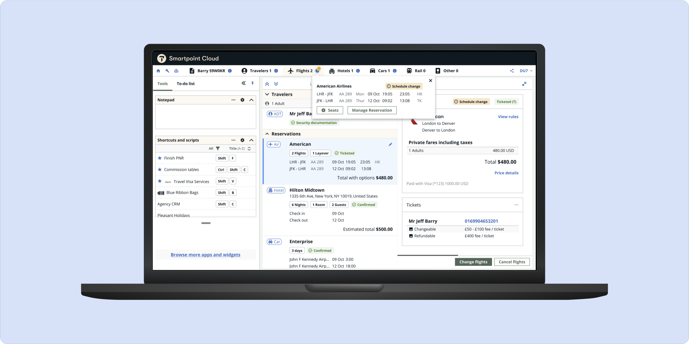
The situation
Agents couldn't see what was actually in the booking they had open
In the legacy system, updates to a booking file happened in the background — agents had to manually refresh just to confirm a change had saved. The interface itself, often called the "cryptic view," required learning software-specific language and keyboard shortcuts just to navigate. Even as the graphical interface improved, one gap remained: agents still couldn't easily see what booking they had open, what it contained, what had changed, or what was still outstanding.
When we moved users onto our new platform, that gap became impossible to ignore. We needed a tool that kept the automation benefits agents relied on, without carrying forward the confusion that had always surrounded it.
Who this was for
Built for novice agents, useful to everyone
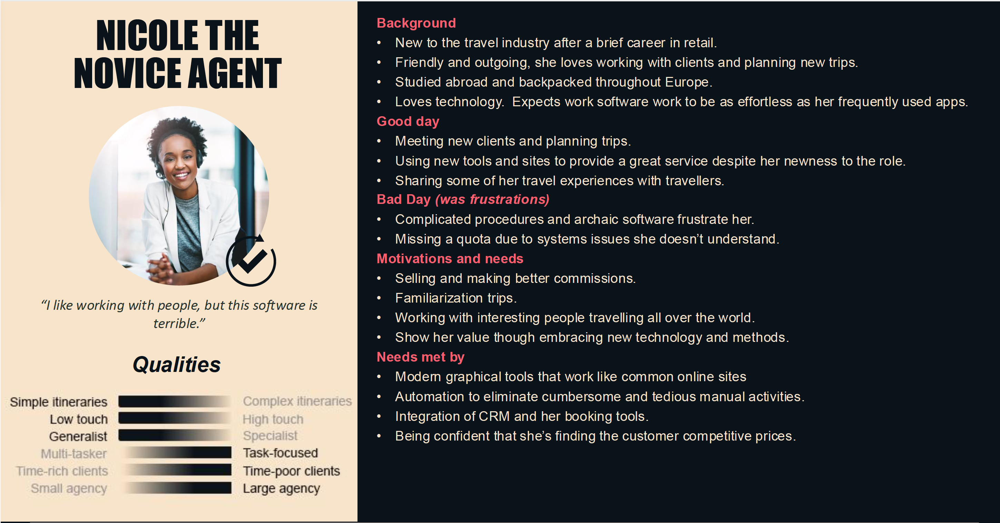
Nicole, the novice agent — one of Smartpoint's core personas.
Snapshot's primary goal was letting novice agents access and service complex bookings without learning the system's cryptic language first. But it also had a secondary job: giving veteran agents faster access to the areas they used constantly, and providing a much better entry point into Smartpoint's core search functions.
Discovery
Research and journey mapping shaped the MVP
The need for Snapshot first surfaced through user feedback during the shift to a more graphically focused interface — agents kept losing track of what booking they had open or what it actually contained. I ran remote moderated interviews using a high-fidelity prototype as the visual aid: four sessions, roughly 60 minutes each, with participants suggested by their account managers.
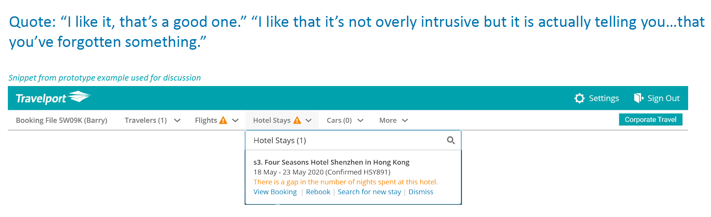
A prototype snippet used in the interviews, and how one participant reacted to its alerts.
Feedback on the initial concept was positive — participants specifically valued visibility into ticketing alerts and dates, quick access to seat status, and traveler details like security documents. They also suggested useful extensions: the ability to log a reason directly against an alert as a timestamped note, custom alerts for agency-specific reminders, and one-click searches that reused data already in the booking file.
Alongside that, I ran an agent journey-mapping exercise with product managers and product owners to plan the path toward a minimum marketable product. That exercise narrowed the MVP down to four core issues: easier access to search functions, a clear overview and summary of the current booking, system and custom alerts, and quick access to commonly needed extras like seats, bags, and upgrades.
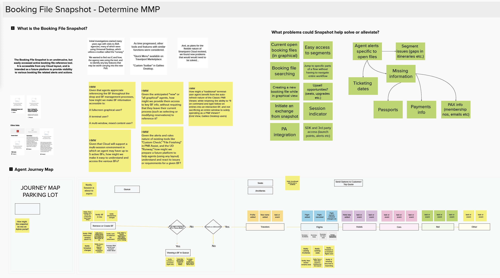
The journey-mapping board used to narrow Snapshot down to a minimum marketable product.
The solution
A persistent summary, available from anywhere in the app
Snapshot surfaces the most important details of a booking file the moment an agent retrieves it — the number of bookings and travelers, file and booking statuses, real-time alerts, and direct links into the areas of the file agents use most.
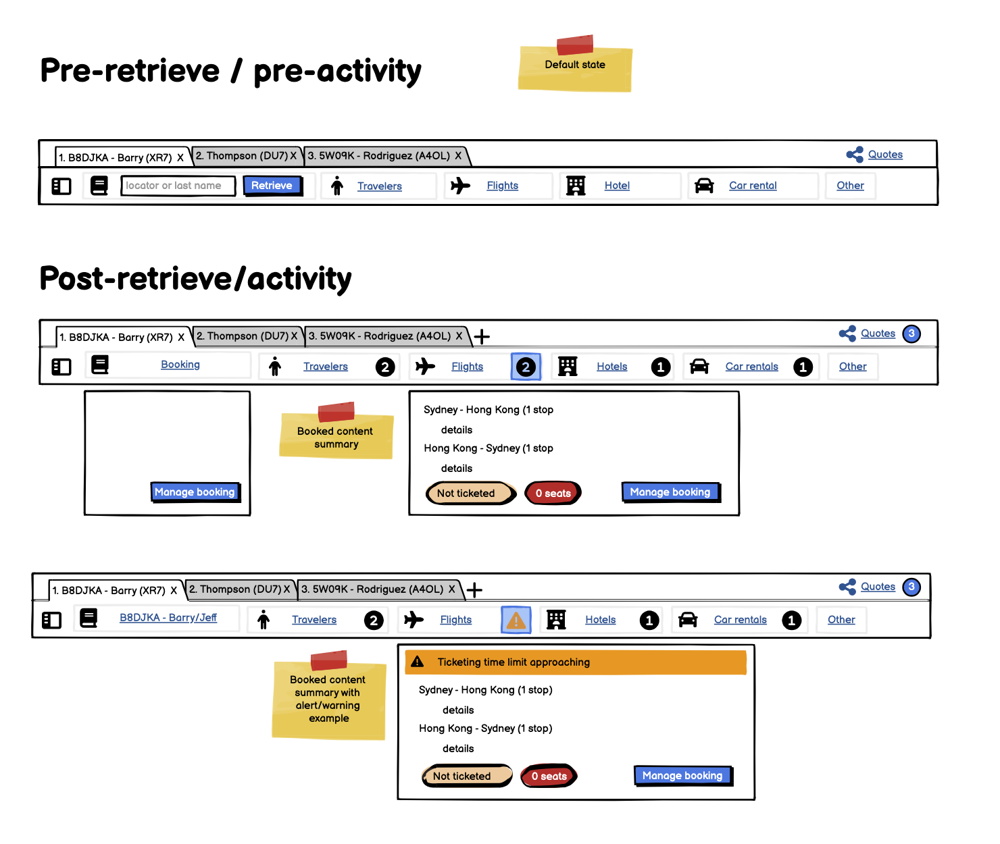
Early wireframes: the header before retrieval, then the booked-content summary with and without an alert.
Instant overview
The most relevant booking details, visible without navigating through complex menus.
Real-time updates
Live status, removing the need for the manual refresh cycle agents relied on before.
Quick access to key areas
Direct links to frequently used sections, cutting time spent hunting through the file.
Easier access to upsell
Direct links to seats, bags, upgrades, and trip insurance — surfaced at the natural moment, not buried.
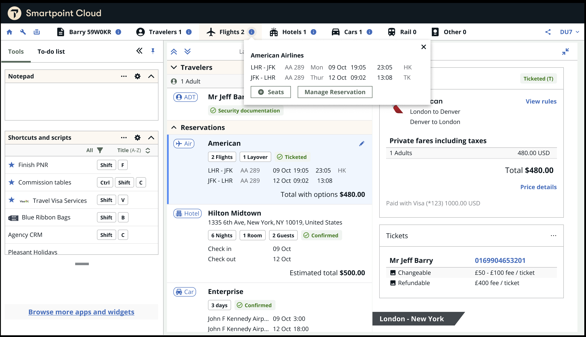
The shipped Snapshot: a flights summary opened straight from the header, over the open booking file.
Design detail
Header, badge, and summary menus
The design centers on a persistent header with tabs into each core search type — flights, hotels, cars — pinned across the app so agents never lose access to it. An info badge on the header reveals a summary of what's already in the open booking file, and it's also where alerts surface. Clicking or hovering the badge opens the summary menus themselves, giving agents the most important booking details from wherever they are in the workflow.
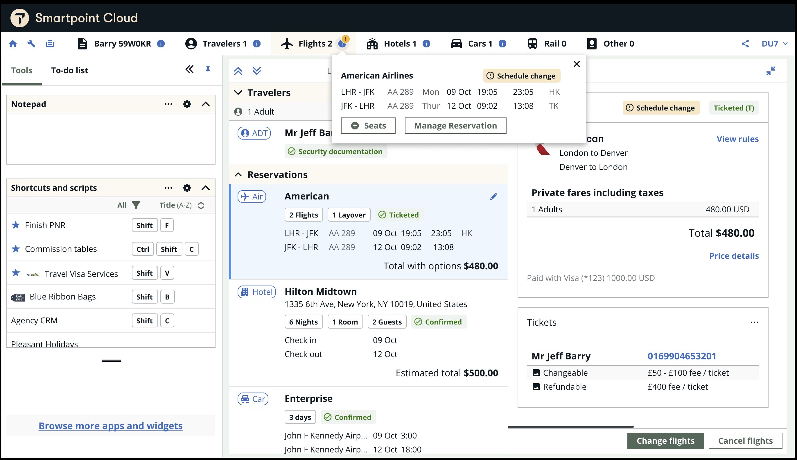
An alert on the header badge: a schedule change flagged in both the summary menu and the booking itself.
Between the first prototype test and this design, the platform underwent a full rebrand of its Atlas design system — meaning Snapshot's visual layer had to be rebuilt to match, on top of the interaction design work already underway.
Alerts became a bigger part of the design than originally planned. The first prototype only surfaced system-detected alerts — a flight issue, for instance, that an agent could click into and resolve directly. Based on research feedback, I added user-defined alerts too: agents can set their own triggers, like a reminder to offer parking add-ons once a booking reaches a certain stage.
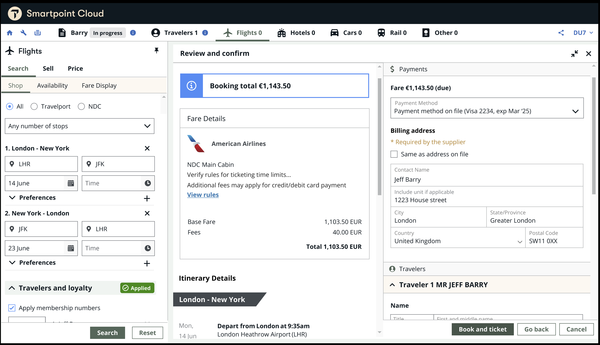
1. The agent reviews and books the trip as normal.
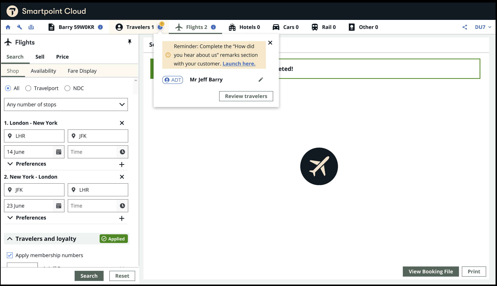
2. After ticketing, a user-defined reminder appears on the Travelers badge.
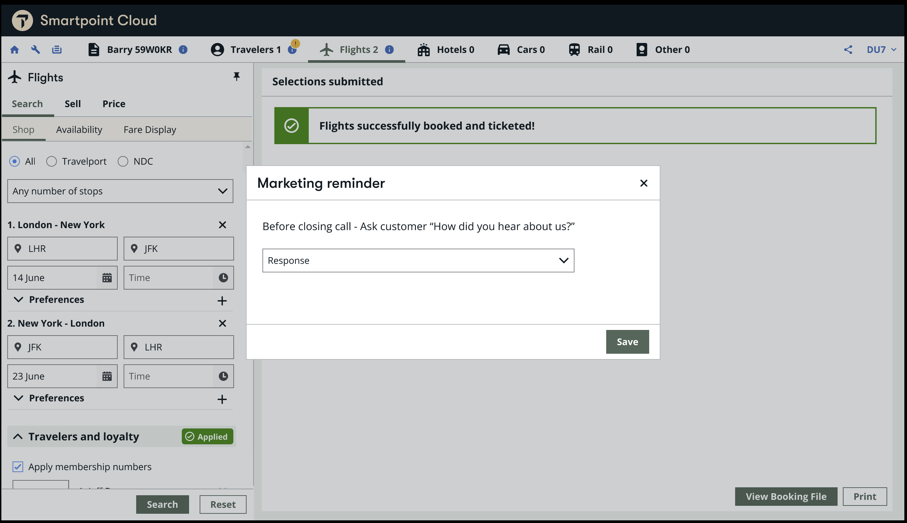
3. Launching it opens the agency's own prompt.
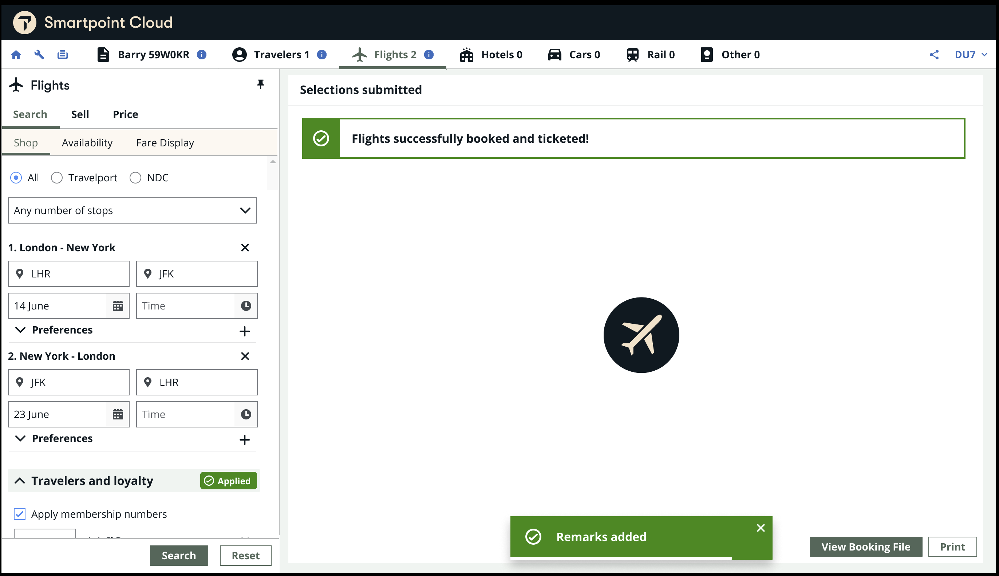
4. Saving writes the answer back to the booking as remarks.
Further testing
A live prototype demo, tested with over 50 users
Beyond the initial four-session study, I ran a live Figma prototype demo with internal customers and customer account managers — over 50 users in total. The goal was validating the new navigation model directly: was access to search panels intuitive, was quick access to reservation summaries actually useful, and what content mattered most when agents looked at a summary.
The prototype demo walked through with users (about 2 minutes).
Feedback from that round shaped several concrete changes:
- Adding control over alert frequency, rather than a single fixed behavior
- Surfacing information on hover instead of requiring a click, for faster access
- Ensuring every segment type displayed a clear status, not just some
- Renaming a seats-only button to cover ancillaries more broadly, since agents needed access to more than just seats
- Only showing tabs when there was actual content behind them
Outcome
Early signal is strong; the tool is still growing
Snapshot has only been live for a short period, but early feedback has been consistently positive. Agents report clearer visibility and less time spent navigating to find basic information. Placing upsell options directly inside Snapshot's summary menus drove a real increase in seat selections and trip insurance uptake — turning a visibility feature into a genuine revenue lever without it feeling like an upsell push.
The clearest sign of product-market fit inside the company itself: multiple teams have already asked to expand Snapshot's functionality further, beyond what shipped in this first version.
Reflection
What went well, and what I'd change
Involving users from early on gave the project a much stronger starting point and removed a lot of the trial-and-error that usually eats the first few iterations of a tool like this. Continuous feedback at each stage of testing let us solve problems before they became real issues in production.
The honest miss: the time between the initial concept and actually shipping Snapshot was too long. Looking back, I'd push harder to build and test in smaller increments, rather than letting the gap between "we know the idea works" and "it's in front of real agents" stretch as far as it did.
Next steps
Where Snapshot goes from here
- Frequent flyer and loyalty details. Surfacing relevant loyalty information directly in the summary, where agents already look for it.
- Deeper accessibility and keyboard support. Improving keyboard navigation across the summary menus for agents who rely on it.
- Smart searches using existing booking data. If a traveler already has a flight landing in a city on a given date, offering a one-click search for a hotel or car using that data automatically, rather than making agents re-enter it.